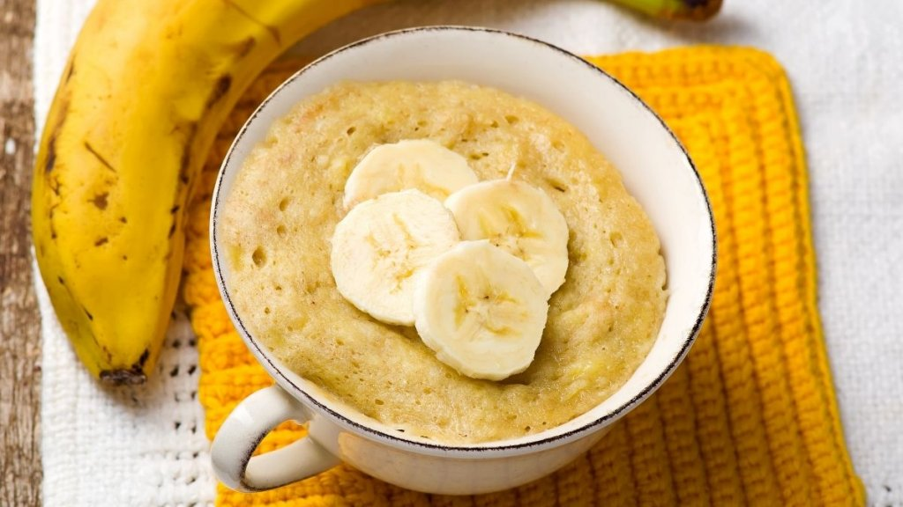

Proteic Microwave Banana Cake

Description
A great option for fit and healty diets, this banana cake is easy and fast to cook, using only a few ingredients and providing protein for your diet!
Ingredients
- 1 large banana (or alternatively 2 small bananas)
- 30 grams of oat flakes
- 2 whole eggs
- 1 serving of the protein powder of your choice
Steps
- list